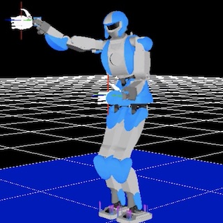

With the humanoid robot HRP-4, we implemented the motion of pouring a cup of water using an electrical pot.
We improved the real-timeness by generating a dual-arm coordinated motion.
Publication
Satoki Tsuichihara, Yuya Hakamata, Gustavo Alfonso Garcia Ricardez, Jun Takamatsu, and Tsukasa Ogasawara, Real-time whole-body motion generation using torso posture regression and center of mass,
ROBOMECH Journal, Vol. 5, No. 1, pp. 1-13, 2018.
[Robomech Journal][bibtex]